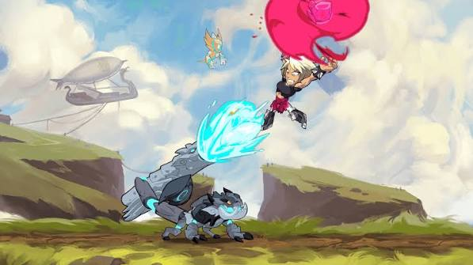
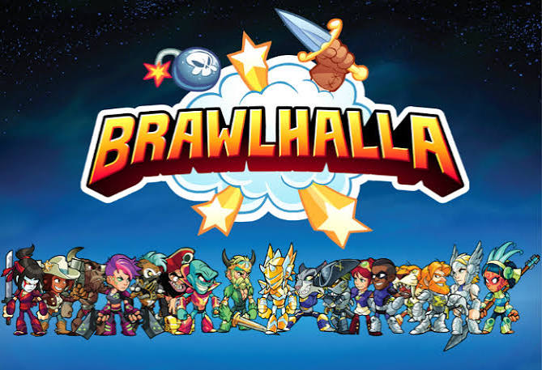

Brawlhalla is a free to play multiplayer and singleplayer fight game. With many different characters and gamemodes. There is ranked and casual , I prefer to play ranked 1v1's but I like to play casual or private matches with my friends. There are 70 different characters, characters are known as legends in this game. Each legend has 2 different weapons to choose from. My main legends are Nix, Sentinel, and Petra. I like to use Hammer, Gautlets, Scythe, and orb the most out of the 15 different weapons. I have been playing this game for a long time but I took a long break from the game a while ago. I have started playing the game again.

This game was made on October 17, 2017. When the game first started there were only 4 characters. The game was pretty different but that makes sense cause it was 9 years ago. The game progressively got better overtime and became popular in 2018, when Ubisoft took over Blue Mammoth Games. Also when the Nintendo Switch came and the Xbox One came out that is when Brawlhalla became even more popular, since Brawlhalla was compatible and free on Nintendo Switch. In 2020 it expanded to phones like Androids and Iphones, which made it more popular but there are less mobile players in Brawlhalla since it is harder to play. But controller works if you connect your controller to your phone.

This game is pretty good and fun to play with friends, but honestly the ranked matches are pretty annoying because the characters aren't too balanced. So if you want to used a character that isn't meant for spamming and then you verse a spammer, your match will be pretty annoying. This game takes lots of hours to become really good at so I would only recommend this game if you just want to play with friends, or if you want to play ranked and get a high rank then you would probably need dedication to play the game. Skill is usually earned just by having experience in the game.
